HOME / BLOG / MLX Animations
MLX Animations
over 3 years
2023 11
In this tutorial we will explore a simple approach to create animations using minilibx :)
So what is an animation and how do they work?
Animations, they can make your project stand out, and they bring life to any program.
In this tutorial you will learn how to create animations and we will explore the theory around animations and how it has changed along the history.
We will use linked lists, so get ready to use your own Libft library!
We will use linked lists, so get ready to use your own Libft library!
Animation is the process of bringing illustrations or objects to life through motion pictures.
This can be achieved manipulating the images to give the illusion of movement, so the viewer will be more interested on the subject.
This can be achieved manipulating the images to give the illusion of movement, so the viewer will be more interested on the subject.

The history of animation
Animation can be tracked back to the early 1600 where people used the "Magic Lantern"
Which was a mirror which used the light and a slide of images to generate an animation.
Which was a mirror which used the light and a slide of images to generate an animation.
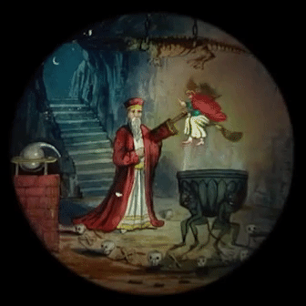
Later in the 1800's a common invention was the spinning cardboard, also known as Phenakistoscope.
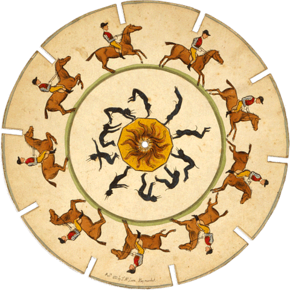
There is also the Praxinoscope also from the 1800's which was also a rotating device with images.

2D animations
Animations as a rule, are a set of ordered images which are displayed on a canvas, each one at their own time.
One of the most common ways to organize animations is using "Sprites".
A sprite is an image which contains a collection of other images, which all together compose an animation.
One of the most common ways to organize animations is using "Sprites".
A sprite is an image which contains a collection of other images, which all together compose an animation.
Sprites might contain one or more animation.
It is your duty to find animations online, or create your own animations, and map the animation order.
For example, in the image above you could consider 4 different animations, one per row, and each animation contains 4 frames (4 steps/ 4 images)
It is your duty to find animations online, or create your own animations, and map the animation order.
For example, in the image above you could consider 4 different animations, one per row, and each animation contains 4 frames (4 steps/ 4 images)
The Code
We will start small, first initialize your project, then we will animate an object, and later on we will implement some animations with sprites.
cd <your_environment> mkdir <tutorial_folder> && cd <tutorial_folder> git init # Create a soft link to your libft library, so you can compile it easily on the root of the project. # You can also just copy the Libft folder to the root, the soft link is to save space, and not duplicate the Libft # If you choose to install your libft locally to your computer you can skip this step ln -s <path_to_libft> libft mkdir src inlcude touch src/main.c include/animation.h include/utils.h
Now it's time to create your Makefile. This is a very personal thing, some people like to organize their project in some specific way; etc.
I will show you how I like to do it.
Separate your source files in the src/ folder, your headers in the include/ folder and the object files (binary) in the bin/ folder.
I also like to keep my libraries at the root of the project, the README.md and an assets/ folder for any images, videos, audios; etc.
The Makefile will need to have all the mandatory rules all, $(NAME), clean & fclean.
In addition I like to add a rule for the subdirectory "Libft" which has to be compiled, as described in the Documentation.
I will show you how I like to do it.
Separate your source files in the src/ folder, your headers in the include/ folder and the object files (binary) in the bin/ folder.
I also like to keep my libraries at the root of the project, the README.md and an assets/ folder for any images, videos, audios; etc.
The Makefile will need to have all the mandatory rules all, $(NAME), clean & fclean.
In addition I like to add a rule for the subdirectory "Libft" which has to be compiled, as described in the Documentation.
BIN = bin
SRC = src/main.c # You will need to add all your src files here if you want you can also use a wildcard
INCS = include
LIBFT_INCS = $(LIBFT)/includes
LIBMLX_INCS = /usr/local/include
LIBFT = libft
LIBMLX = /usr/local/lib
CFLAGS = -Wall -Werror -Wextra -g -O3
LFLAGS = -L$(LIBFT) -lft -L$(LIBMLX) -lmlx
IFLAGS = -I$(INCS) -I$(LIBFT_INCS) -I$(LIBMLX_INCS)
UNAME := $(shell uname)
NAME = animations
RM = rm -rf
OBJS = $(SRC:src/%c=$(BIN)/%o)
ifeq ($(UNAME), Darwin)
CC = gcc
LFLAGS += -framework OpenGL -framework AppKit
else ifeq ($(UNAME), FreeBSD)
CC = clang
LFLAGS += -lbsd -lXext -lX11 -lm
else
CC = gcc
CFLAGS += -D LINUX
LFLAGS += -lbsd -lXext -lX11 -lm
endif
all: $(NAME)
$(NAME): ${BIN} ${OBJS} | ${LIBFT}
${CC} ${OBJS} ${LFLAGS} -o ${NAME}
$(BIN)/%o: src/%c
${CC} -c $< ${CFLAGS} ${IFLAGS} -o $@
$(BIN):
mkdir -p $(BIN)
$(LIBFT):
@make all -C $(LIBFT) --no-print-directory
clean:
$(RM) $(BIN)
fclean: clean
$(RM) $(NAME)
@make fclean -C $(LIBFT) --no-print-directory
re: fclean all
test:
valgrind --leak-check=full --show-leak-kinds=all --track-origins=yes --verbose --log-file=valgrind-out.txt ./$(NAME)
show:
@printf "UNAME : $(UNAME)\n"
@printf "NAME : $(NAME)\n"
@printf "CC : $(CC)\n"
@printf "CFLAGS : $(CFLAGS)\n"
@printf "LFLAGS : $(LFLAGS)\n"
@printf "IFLAGS : $(IFLAGS)\n"
@printf "SRC : $(SRC)\n"
@printf "OBJS : $(OBJS)\n"
.PHONY: $(LIBFT) re all clean fclean
Now we are ready to write some code. I will bring some of the functions I did before on the mlx tutorial, for instance, the window image, and colors functions.
I think it's a good idea to put those functions in the src/main.c, src/window_utils.c, src/image_utils.c and I will put their definitions on the include/utils.h.
You can download the getStartedPack.zip, which contains the functions that I will describe bellow, but be sure to copy your libft to the root, or link it, also check the Makefile to make sure that the Libft include path is correct and pointing to the directory where you have your libft headers.
I think it's a good idea to put those functions in the src/main.c, src/window_utils.c, src/image_utils.c and I will put their definitions on the include/utils.h.
You can download the getStartedPack.zip, which contains the functions that I will describe bellow, but be sure to copy your libft to the root, or link it, also check the Makefile to make sure that the Libft include path is correct and pointing to the directory where you have your libft headers.
Declare the structs which are going to represent windows and images.
Add the declaration of a few functions, which were described on the mlx tutorial, although they are quite self explanatory...
include/utils.h
#ifndef UTILS_H
# define UTILS_H
# include <mlx.h>
typedef struct s_win
{
void *mlx_ptr;
void *win_ptr;
int width;
int height;
} t_win;
typedef struct s_img
{
t_win win;
void *img_ptr;
char *addr;
int h;
int w;
int bpp;
int endian;
int line_len;
} t_img;
/*Window and Images*/
t_win new_window(int w, int h, char *str);
t_img new_img(int w, int h, t_win window);
void put_pixel_img(t_img img, int x, int y, int color);
#endif
src/window_utils.c
#include "utils.h"
#include <mlx.h>
t_win new_window(int w, int h, char *str)
{
void *mlx_ptr;
mlx_ptr = mlx_init();
return ((t_win) {mlx_ptr, mlx_new_window(mlx_ptr, w, h, str), w, h});
}
src/image_utils.c
#include "utils.h"
#include <mlx.h>
t_img new_img(int w, int h, t_win window)
{
t_img image;
image.win = window;
image.img_ptr = mlx_new_image(window.mlx_ptr, w, h);
image.addr = mlx_get_data_addr(image.img_ptr, &(image.bpp),
&(image.line_len), &(image.endian));
image.w = w;
image.h = h;
return (image);
}
void put_pixel_img(t_img img, int x, int y, int color)
{
char *dst;
if (x >= 0 && y >= 0 && x < img.w && y < img.h) {
dst = img.addr + (y * img.line_len + x * (img.bpp / 8));
*(unsigned int *) dst = color;
}
}
The main will use new_window to create a new window instance, and it will use new_img to create an image, then it will paint a white pixel in the middle of the screen.
src/main.c
#include "utils.h"
#include "libft.h"
int main(void)
{
t_win tutorial;
t_img image;
tutorial = new_window(300, 300, "animations");
if (!tutorial.win_ptr)
return (2);
image = new_img(300, 300, tutorial);
{
/* Put white pixel */
put_pixel_img(image, 150, 150, 0x00FFFFFF);
mlx_put_image_to_window (image.win.mlx_ptr, image.win.win_ptr, image.img_ptr, 0, 0);
}
mlx_loop(tutorial.mlx_ptr);
mlx_destroy_window(tutorial.mlx_ptr, tutorial.win_ptr);
return (0);
}
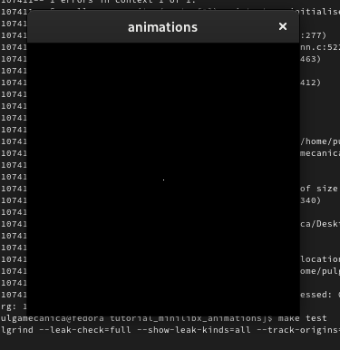
Simple Animation (Rectangle & Circle)
Figures Animation
(You can skip this section and go to Advance Animation Sprites)
This section is only going to teach you how to animate figures, not sprites. Although this is more easy and if you follow this part, you will understand better the Advance Animation.
If you wanted to animate figures, then you don't need to worry about the change of shape, since the figure will always be the same, a circle, triangle; rectangle.
We can animate very easily figures, for instance a solution could be to have a vector which defines the coordinates of the figure for each frame.
For example:
Let s1 be a rectangle of SIZE = 20px.
Let c1 be the coordinate of the top left corner of the rectangle, we could define a list of coordinates for c1, and thus animate the rectangle accordingly.
list_of_coordinates = [(0, 0), (0, 1), (1, 2), (4, 1), (2, 3), (4, 4)...]
This could represent the movement for a figure, and in the case of the circle the coordinates could be represented by the center of the circle.
We could also try to change the color of the figure, or even the size, in that case, we could create a data structure to hold all this information.
animation = [{(0, 0), red, 10}, {(0, 1), green, 10}, {(1, 2), red, 10}, {(4, 1), yellow, 10} ...]
We can change to each frame rapidly, and that could be what we need in some cases, but when we are animating figures, perhaps it's a good idea to animate from one frame to another gradually, it's also visually more attractive.
For this we need to create a frame rate, or in other words an frame per second rule for our program, this means that the actions of our program will be reflected X times per second.
fps means the number of times per second we change the image on the window.
Now Let's add the figures to our headers:
include/utils.h
typedef struct s_rect {
unsigned short int x;
unsigned short int y;
unsigned short int size_w;
unsigned short int size_h;
int color;
} t_rect;
typedef struct s_circle {
unsigned short int x;
unsigned short int y;
unsigned short int radius;
int color;
} t_circle;
...
...
...
/* FIGURES */
void draw_rect(t_rect rect, t_img img);
void draw_circle(t_circle circle, t_img img);We have to make some functions to draw our figures. As you can see, I also added the declaration of two functions:
draw_rect & draw_circle
src/figures_utils.c
#include "utils.h"
#include <mlx.h>
void draw_rect(t_rect rect, t_img img) {
unsigned short int i;
unsigned short int j;
i = 0;
while (i < rect.size_h && i + rect.y < img.h) {
j = 0;
while (j < rect.size_w && j + rect.x < img.w) {
put_pixel_img(img, j + rect.x, i + rect.y, rect.color);
j++;
}
i++;
}
}
void draw_circle(t_circle circle, t_img img) {
unsigned short int i;
unsigned short int j;
i = 0;
while (i < circle.radius * 2 && i + circle.y < img.h) {
j = 0;
while (j < circle.radius * 2 && j + circle.x < img.w) {
if (((j - circle.radius) * (j - circle.radius)) +
((i - circle.radius) * (i - circle.radius)) <
(circle.radius * circle.radius)){
put_pixel_img(img, j + circle.x, i + circle.y, circle.color);
}
j++;
}
i++;
}
}Now in your main, instead of using the function put_pixel_img to place one white pixel, you can use this functions to put figures on your canvas, for example:
draw_circle((t_circle){100, 120, 23, 0x0002f999},
draw_circle((t_circle){150, 250, 15, 0x00f022bf},
draw_rect((t_rect){10, 10, 20, 50, 0x005F5599},
draw_rect((t_rect){70, 200, 10, 50, 0x0012daf1},
mlx_put_image_to_window (image.win.mlx_ptr, image.win.win_ptr, image.img_ptr, 0, 0);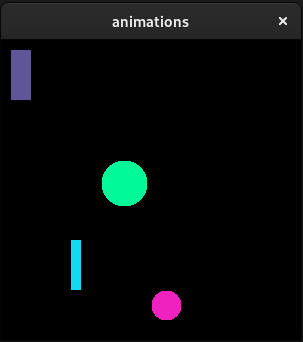
Now let's add a background to our program, for this we can modify the t_win structure and set a rectangle for the background.
- Make sure that you declare your t_rect structure ABOVE t_win, because else, the t_rect bg param is not going to be recognized.
include/utils.h
typedef struct s_win {
void *mlx_ptr;
void *win_ptr;
int height;
int width;
t_rect bg;
} t_win;src/window_utils.c
t_win new_window(int w, int h, char *str) {
void * mlx_ptr;
t_win win;
mlx_ptr = mlx_init();
win = (t_win){mlx_ptr,
mlx_new_window(mlx_ptr, w, h, str),
w,
h,
(t_rect){0, 0, w, h, 0x00a4ff32}};
return (win);
}
At this point we should add a hook to our program, this hook will update our program X times per second (fps).
But first, we need to create our main struct. So far, we have only created "utils" and nothing related to animations, so now we will create a struct that can hold many animations.
We start by defining a representation of a frame. As described above, animations are made out of frames, and each frame has a state, we need to have a struct that represents this state. For our figures we can define the next configurations: coordinates, size & color.
Then we can declare a struct (data type) which is going to represent one animation. And we will use linked lists to save the frames of the animation.
Finally our program will be able to hold many animations so we will use once again a good old linked list.
But first, we need to create our main struct. So far, we have only created "utils" and nothing related to animations, so now we will create a struct that can hold many animations.
We start by defining a representation of a frame. As described above, animations are made out of frames, and each frame has a state, we need to have a struct that represents this state. For our figures we can define the next configurations: coordinates, size & color.
Then we can declare a struct (data type) which is going to represent one animation. And we will use linked lists to save the frames of the animation.
Finally our program will be able to hold many animations so we will use once again a good old linked list.
include/animation.h
#ifndef ANIMATION_H
# define ANIMATION_H
# include "utils.h"
# include <mlx.h>
# include <stdlib.h>
enum fig_type {
CIRCLE,
RECT
};
typedef struct s_frame {
int x;
int y;
int color;
int figure_size;
} t_frame;
typedef struct s_animation {
t_list * frames;
enum fig_type fig_type;
t_frame current_frame; // The configuration of the current frame
int delay; // How many fps it takes to change animation frams
int _tmp_delay; // Delay Iterator
int current_frame_num; // Which frame is selected
long int fps; // Frames per second, this could be delayed
long int last_updated; // When was the last update
long int frame_count; // The frame count
} t_animation;
typedef struct s_animator {
t_list * animations;
t_win * win;
t_img * img;
} t_animator;
int update(t_animator *a);
t_animation * ball_animation1(int delay, int fps);
#endifWe need to save the fig_type in an enum because else would be impossible to know which function to call to draw the figure.
Now let's code the hook!
Create the file src/animator.c inside, you will create the function update, which you might have noticed on the last lines of the header above.
src/animator.c
int update(t_animator * animator) IF ANIMATOR HAS ANIMATIONS FOR EACH ANIMATION UPDATE DRAW BACKGROUND DRAW EACH ANIMATION CURRENT FRAME }
The reason I am writing the pseudo-code and not the code is because it might get a little confusing.
At this point we have to also consider the update function of each animation. (This will be called for each animation)
int update(t_animator * animator) {
IF TIME_TO_UPDATE
IF DELAY
TRANSITION TO FRAME (CURRENT FRAME)
ELSE
UPDATE FRAME (CURRENT FRAME)
FRAME_ID += 1
}We will get back to the pseudo-code, but before that, let's add a 2 new functions to libft!!!
You can add them to your library or if you prefer just add them in a src/utils.c file.
You can add them to your library or if you prefer just add them in a src/utils.c file.
t_list *ft_lstget(t_list *lst, int index); void ft_lstiter_param(t_list *lst, void (*f)(void *, void *), void * ptr);
ft_lstget is just like ft_lstlast, but instead it takes an index.
If the index doesn't exists, it returns NULL.
ft_lstiter_param very similar to ft_lstiter, although it takes a third extra parameter,
and the second parameter is expecting a function that takes two void *.
The first argument which is going to be passed to the function f is the content,
and the second argument is going to be the ptr pointer that you pass.
#include "libft.h"
t_list *ft_lstget(t_list *lst, int index)
{
t_list *n;
int i;
i = 0;
n = lst;
if (n == NULL)
return (NULL);
if (n->next == NULL)
return (n);
while (n != NULL)
{
if (i >= index)
return (n);
n = n->next;
i++;
}
return (NULL);
}#include "libft.h"
void ft_lstiter_param(t_list *lst, void (*f)(void *, void *), void * ptr)
{
t_list *temp;
temp = lst;
while (temp != NULL)
{
f(temp->content, ptr);
temp = temp->next;
}
}
Now with this superb new functions we can implement the pseudo-code which I presented above.
First, we are going to implement without fps so the code doesn't get too big and confusing.
First, we are going to implement without fps so the code doesn't get too big and confusing.
src/animator.c
int update(t_animator * animator) {
if (!animator)
return (0);
if (animator->animations)
ft_lstiter(animator->animations, update_animation);
draw_rect(animator->win->bg, *animator->img);
if (animator->animations) {
ft_lstiter_param(animator->animations, draw_frame, animator->img);
}
mlx_put_image_to_window(animator->win->mlx_ptr, animator->win->win_ptr, animator->img->img_ptr, 0, 0);
return (1);
}The code above should make sense, it's what the pseudo code was describing, here we can see the advantages of using libft and the powerful linked_lists with an abstraction of figures.
We call update_animation on the ft_lstiter function, and the update_animation will be in charge of updating the animation. We will review that function bellow
We call draw_frame, on the ft_lstiter_param, and we send the animator->img pointer, that's because we need the image when we call the function draw_rect or draw_circle.
Finally we put the image to the window, that should be very intuitive, else we woundn't see the img LOL.
The function draw_frame is a big big big abstraction and perhaps it's going to be the first time you see this, and you will be impressed about it, the function takes two void pointers, the first one is going to be the "content" of the linked list, and the second argument is going to be animator->img, read the description of the function ft_listiter_param if you got a bit lost.
Basically draw_frame is going to call draw_rect or draw_circle, depending on the figure_type of the frame. This means that we can have linked lists with different content, on the same list, although booth are figures, so it makes sense that we can put them together, they share some characteristics.
src/animator.c
static void draw_frame(void * ptr1, void * ptr2) {
t_animation * a;
t_img * img;
a = (t_animation *)ptr1;
img = (t_img *)ptr2;
if (!a || !img)
return ;
if (a->fig_type == CIRCLE) {
draw_circle((t_circle){
a->current_frame.x,
a->current_frame.y,
a->current_frame.figure_size,
a->current_frame.color}, *img);
} else if (a->fig_type == RECT) {
draw_rect((t_rect){
a->current_frame.x,
a->current_frame.y,
a->current_frame.figure_size,
a->current_frame.figure_size,
a->current_frame.color
}, *img);
}
}
int update(t_animato...It's time to review the function update_animation
First we will implement this function without considering transitions or the fps, we will just change the frame every time the functions is called.
First we will implement this function without considering transitions or the fps, we will just change the frame every time the functions is called.
src/animator.c
static void update_animation(void * ptr) {
t_animation * a;
t_list * elem;
t_frame * f;
a = (t_animation *)ptr;
if (!a)
return;
elem = ft_lstget(a->frames, a->current_frame_num);
f = (t_frame *)elem->content;
if (!elem || !f)
return ;
a->current_frame = *f;
a->current_frame_num++;
a->current_frame_num %= ft_lstsize(a->frames);
}
static void draw_fram...
int update(t_animato...The last lines are very important, when we use the %= it's basically looping through the list.
If the list had a size 4, then the current_frame_num would be something like this:
0, 1, 2, 3, 0, 1, 2, 3, 0, 1, 2, 3, 0, 1, 2... infinitely
That's because we use the % with the ft_lstsize
Finally you just have to create whatever animation you can think about with rectangles and circles.
I'll give you one example:
(I decided to create a new file to place all the animations)
I'll give you one example:
(I decided to create a new file to place all the animations)
src/animations.c
#include "animation.h"
static t_frame * new_frame(t_frame frame) {
t_frame * f;
f = (t_frame *)ft_calloc(sizeof(t_frame), 1);
if (!f)
return (NULL);
*f = frame;
return (f);
}
t_animation * orbit(int delay, int fps) {
t_animation * a;
int i;
t_frame * fs[360];
a = (t_animation *)ft_calloc(sizeof(t_animation), 1);
if (!a)
return (NULL);
i = -1;
while (++i < 360)
fs[i] = new_frame((t_frame){cos(deg_to_rad(i)) * 130 + 135, sin(deg_to_rad(i)) * 130 + 135, rand(), 15});
*a = (t_animation){NULL, CIRCLE, *fs[0], delay, 0, 0, fps, 0, 0};
i = -1;
while (++i < 360)
ft_lstadd_back(&a->frames, ft_lstnew(fs[i]));
return (a);
}
t_animation * semaphore(int delay, int fps) {
t_animation * a;
int i;
t_frame * fs[192];
a = (t_animation *)ft_calloc(sizeof(t_animation), 1);
if (!a)
return (NULL);
i = -1;
while (++i < 50)
fs[i] = new_frame((t_frame){20, 160, 0x00d4180b, 20});
fs[i++] = new_frame((t_frame){20, 160, 0, 20});
fs[i++] = new_frame((t_frame){20, 160, 0x00d4180b, 20});
fs[i] = new_frame((t_frame){20, 160, 0, 20});
while (++i < 103)
fs[i] = new_frame((t_frame){20, 200, 0x00ff6803, 20});
fs[i++] = new_frame((t_frame){20, 200, 0, 20});
fs[i++] = new_frame((t_frame){20, 200, 0x00ff6803, 20});
fs[i] = new_frame((t_frame){20, 200, 0, 20});
fs[i++] = new_frame((t_frame){20, 200, 0, 20});
fs[i++] = new_frame((t_frame){20, 200, 0x00ff6803, 20});
fs[i] = new_frame((t_frame){20, 200, 0, 20});
fs[i++] = new_frame((t_frame){20, 200, 0x00ff6803, 20});
fs[i++] = new_frame((t_frame){20, 200, 0, 20});
fs[i] = new_frame((t_frame){20, 200, 0x00ff6803, 20});
while (++i < 192)
fs[i] = new_frame((t_frame){20, 230, 0x0028e813, 20});
*a = (t_animation){NULL, CIRCLE, *fs[0], delay, 0, 0, fps, 0, 0};
i = -1;
while (++i < 192)
ft_lstadd_back(&a->frames, ft_lstnew(fs[i]));
return (a);
}You can create any animation you want, then you just have to add it to the linked list of animations before executing the hook look.
Also getting back to the hook, we can implement it like this:
src/main.c
#include "utils.h"
#include "animation.h"
#include "libft.h"
int main(void) {
t_win tutorial;
t_img image;
t_animator animator3000;
tutorial = new_window(300, 300, "animations");
if (!tutorial.win_ptr)
return (2);
image = new_img(300, 300, tutorial);
animator3000 = (t_animator){NULL, &tutorial, &image};
ft_lstadd_back(&animator3000.animations, ft_lstnew(ball_animation(5, 32)));
ft_lstadd_back(&animator3000.animations, ft_lstnew(rect_animation(5, 32)));
ft_lstadd_back(&animator3000.animations, ft_lstnew(orbit(5, 32)));
ft_lstadd_back(&animator3000.animations, ft_lstnew(semaphore(5, 32)));
mlx_loop_hook(tutorial.mlx_ptr, update, &animator3000);
mlx_loop(tutorial.mlx_ptr);
destroy_image(image);
destroy_window(tutorial);
return (0);
}
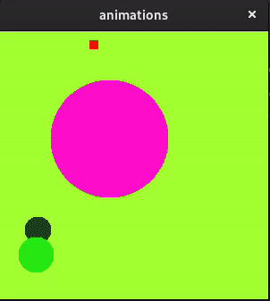
Let's not forget to add some destroyers to our program:
You can hook the destroyers to some hook like ESC or whatever you want.
include/utils.h
void destroy_image(t_img img); void destroy_window(t_win w);
include/animation.h
int destroy_animator(t_animator * a);
src/window_utils.c
void destroy_window(t_win w) {
if (w.mlx_ptr && w.win_ptr)
mlx_destroy_window(w.mlx_ptr, w.win_ptr);
if (w.mlx_ptr)
free(w.mlx_ptr);
}src/image_utils.c
void destroy_image(t_img img) {
if (img.img_ptr && img.win.mlx_ptr)
mlx_destroy_image(img.win.mlx_ptr, img.img_ptr);
}src/animator.c
static void destroy_animation(void * ptr) {
t_animation * a;
a = (t_animation *)ptr;
if (!a)
return ;
ft_lstclear(&a->frames, free);
ft_putendl_fd("Frames destroyed :)\n", 1);
}
int destroy_animator(t_animator * a) {
ft_lstiter(a->animations, destroy_animation);
ft_lstclear(&a->animations, free);
destroy_image(*a->img);
destroy_window(*a->win);
ft_putendl_fd("Animator terminated :)\n", 1);
exit(0);
}You can learn how to make the FPS effect if you continue reading the next tutorial, then you will be able to implement if on your update_animation function.
And with this the figures section finishes! I hope you enjoyed and lernt a LOT about C and how to make animations!
Advanced Animation (Sprites)
In this tutorial we are going to need some sprites, you can choose any sprite sheet you want, I recommend this website with this exact tags to find some good assets: https://itch.io/game-assets/free/tag-2d/tag-sprites
Sprites are special images that can be used to create animations, kind of like a flip book. To create a sprite animation, first you’ll need an image which contains each frame of your animation.
I will atatch the sprites that I will use for this tutorial, but you can choose any.
Some sprites sheets are meant to respond to the user input, or an event in the program, some sprite sheets are meant to be played once, like an explosion. So we will need to concider this later on.
From my point of view, the best way to generate sprites, is to first load ALL your assets into your program and then you can choose which assets you are going to use, again we will be using a linked list to identify the assets, and also the assets that are being animated on screen.
Some objects/characters/events in our program might have more than one animation. That's why we are going to use a linked list for each object of our program.
One sprite might contain more than one animation, and we will need to idenify each of the animations inside the sprite to generate each animation.
Take for example the image bellow:
Sprites are special images that can be used to create animations, kind of like a flip book. To create a sprite animation, first you’ll need an image which contains each frame of your animation.
I will atatch the sprites that I will use for this tutorial, but you can choose any.
Some sprites sheets are meant to respond to the user input, or an event in the program, some sprite sheets are meant to be played once, like an explosion. So we will need to concider this later on.
From my point of view, the best way to generate sprites, is to first load ALL your assets into your program and then you can choose which assets you are going to use, again we will be using a linked list to identify the assets, and also the assets that are being animated on screen.
Some objects/characters/events in our program might have more than one animation. That's why we are going to use a linked list for each object of our program.
One sprite might contain more than one animation, and we will need to idenify each of the animations inside the sprite to generate each animation.
Take for example the image bellow:
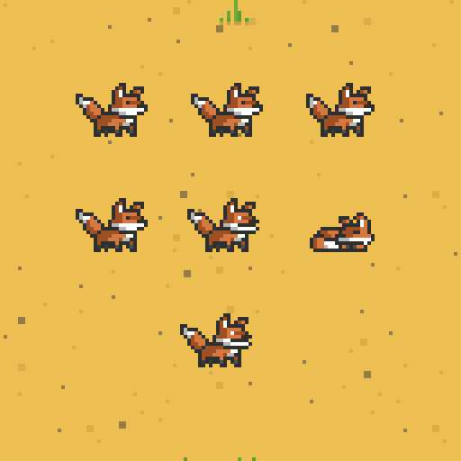
As you can see, there are 7 different animations displayed, and each one of the animations is defined in the spritesheet,
you get the idea, naturally...
It's arguable that there is a 'better' way to organize the sprites, around the world everyone has founded their best way, that's why you see so many messy sprites, although usually the sprite is in the correct order of animation, from left to right.
In the case of the sprite bellow, you must divide each row to be one animation.
you get the idea, naturally...
It's arguable that there is a 'better' way to organize the sprites, around the world everyone has founded their best way, that's why you see so many messy sprites, although usually the sprite is in the correct order of animation, from left to right.
In the case of the sprite bellow, you must divide each row to be one animation.
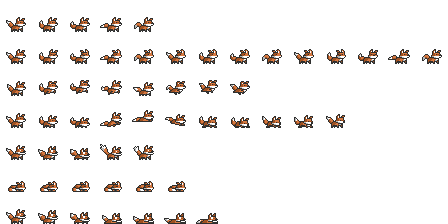
To meassure your sprite rows and columns, you can use this website: https://ezgif.com/sprite-cutter/
In the case of the fox sprite, it is 7 columns by 14 rows, so I will cut it accordingly.
The result was a perfect cut. Since the image is 448 x 224px now I can know for sure that the grid is 32px wide by 32px tall. Usually most sprites are 32 or 64 px, but you shoud always meke sure, specially relying on other's sprites.
In the case of the fox sprite, it is 7 columns by 14 rows, so I will cut it accordingly.
The result was a perfect cut. Since the image is 448 x 224px now I can know for sure that the grid is 32px wide by 32px tall. Usually most sprites are 32 or 64 px, but you shoud always meke sure, specially relying on other's sprites.
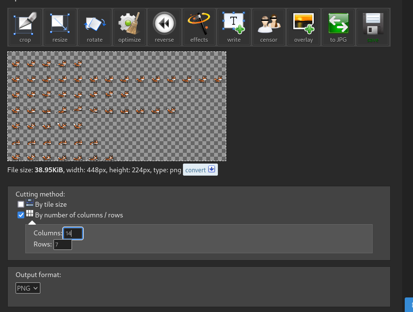
Another clean cut but this time I founded that the Link sprite is 64px x 64px
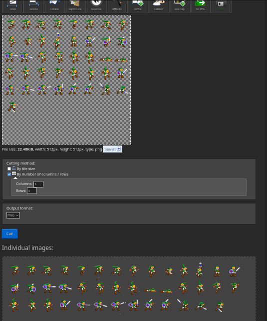
And finally, the last Sprite, it was the weirdest one, but that doesn't mean we can't use it.
It's 12 columns by 1344 width, and 11 rows by 1463 height. That means that each tile is 112px wide by 133 pixels tall.
But this last one has some padding on each frame, so we should concider that.
If you use the same website, on the bottom, you have the option to create a gif, and then crop the gif, be sure not to stack the frames, that should give you an idea of how much padding it has. you can select the area that you prefer and then you can get the padding.
In this case the padding was around 16px, that means that the real size of each frame is 80x101 pixels.
It's 12 columns by 1344 width, and 11 rows by 1463 height. That means that each tile is 112px wide by 133 pixels tall.
But this last one has some padding on each frame, so we should concider that.
If you use the same website, on the bottom, you have the option to create a gif, and then crop the gif, be sure not to stack the frames, that should give you an idea of how much padding it has. you can select the area that you prefer and then you can get the padding.
In this case the padding was around 16px, that means that the real size of each frame is 80x101 pixels.

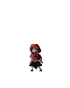
We already have one white pixel on the middle of the screen, great, now how can we place images in our program?
I recommend that you convert all your sprites to XPM files, you can do this online, then you will be able to call the function mlx_xpm_file_to_image which returns a pointer to the created mlx_img and it will also set the width and height of the image.
For instance let's try just to place one of our sprites to the program.
Add the following functions:
src/image_utils.c
t_img new_file_img(char * path, t_win window) {
t_img image;
image.win = window;
image.img_ptr = mlx_xpm_file_to_image(window.mlx_ptr, path, &image.w, &image.h);
if (!image.img_ptr)
write(2, "File could not be read\n", 23);
else
image.addr = mlx_get_data_addr(image.img_ptr, &(image.bpp),
&(image.line_len), &(image.endian));
return (image);
}
unsigned int get_pixel_img(t_img img, int x, int y)
{
return (*(unsigned int *)((img.addr
+ (pixel_y * img.line_len) + (pixel_x * img.bpp / 8))));
}src/main.c
#include "utils.h"
#include "libft.h"
int main(void)
{
t_win tutorial;
tutorial = new_window(600, 500, "animations");
if (!tutorial.win_ptr)
return (2);
image = new_img(600, 500, tutorial);
{
/* Put white pixel */
put_pixel_img(image, 150, 150, 0x00FFFFFF);
mlx_put_image_to_window (image.win.mlx_ptr, image.win.win_ptr, image.img_ptr, 0, 0);
destroy_image(image);
}
{
/* Put image */
t_img tloz_img;
tloz_img = new_file_img("assets/link.xpm", tutorial);
if (!tloz_img.img_ptr)
return (1);
mlx_put_image_to_window (tloz_img.win.mlx_ptr, tloz_img.win.win_ptr, tloz_img.img_ptr, 0, 0);
destroy_image(tloz_img);
}
mlx_loop(tutorial.mlx_ptr);
destroy_window(tutorial);
return (0);
}
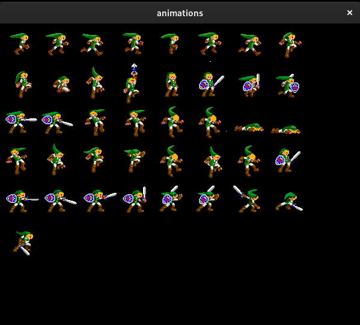
It was very easy to place an image in our program, now we just need to cut/slice the frames from the image and create our animations.
In this case, the animations are ordered, and each frame is followed by the next frame, but in some cases that's not true. That is why the code should be as flexible as posible.
Starting by defining a structure that will hold our program animations.
In this case, the animations are ordered, and each frame is followed by the next frame, but in some cases that's not true. That is why the code should be as flexible as posible.
Starting by defining a structure that will hold our program animations.
src/animation.h
#ifndef ANIMATION_H
# define ANIMATION_H
# include <mlx.h>
enum entity {
PLAYER,
ENEMY,
EVENT,
OBJ,
};
typedef struct s_animation {
t_list * frames;
int width;
int height;
int delay; // How many fps it takes to change animation
int _tmp_delay; // Delay Iterator
int current_frame_num; // Which frame is selected
long int last_updated; // When was the last update
long int frame_count; // The frame count
enum entity entity;
} t_animation;
#endifThe entity enum is optional, but I recommend it when you are going to implement animations for different things. For example, you could have an animation for a click, or for an explosion, or perhaps for a character movement, if that's the case, this can help you identify which type of animation it is.
Now we should define the sprite and the slices/cuts. Remember, one sprite contains one or more animations, each frame of the animation is identified by a slice/cut.
src/sprite.h
#ifndef SPRITE_H
# define SPRITE_H
# include <mlx.h>
# include "utils.h"
# include "libft.h"
# include "animation.h"
typedef struct s_sprite {
t_list * animations;
char * name;
char * file_path;
t_img sprite_img;
int width;
int height;
int z_index;
} t_sprite;
typedef struct sprite_slice {
int x;
int y;
int width;
int height;
} sprite_slice;
/* Sprite */
t_sprite new_sprite(char * name, char * file_path, t_win * win);
t_animation * slice_sprite(t_sprite s, sprite_slice slice, int frames, int delay, enum entity e);
void destroy_sprite(t_sprite s);
#endifThe sprite t_list * animations is a linked list, which is going to hold each animation from the sprite at file_path.
I added the name just to fancy a little, if you want you can remove it. The width and height represent the total width and height of the sprite, the z_index is for the layer of the animation, for example, an explosion, usually should be at the first plane so the user can only see the explosion. A wall which is animated should be in the last layer for example, so it adds a depth to the program.
Now we create a few functions for our sprites. There are two fundamental functions that we need.
The first one is a function to create the sprite. This will load the full sprite image and it will set up everything exept the animations.
The second function is going to allow us to to add frames to our sprite animations. One frame is defined by a slice of the sprite.
src/sprite.c
#include "sprite.h"
t_sprite new_sprite(char * name, char * file_path, t_win * win) {
t_img img;
img = new_file_img(file_path, *win);
return (t_sprite){NULL, ft_strdup(name),
ft_strdup(file_path), img, img.w, img.h, 0};
}For now we define the z_index (layer) to 0, but later we can change this.
Something very important to have in mind:
We are avoiding the use of malloc although in theory it would be convenient to throw NULL if the image file_path was not valid. But it's impossible since we can only return t_sprite.
After using this function you should ALWAYS check that the sprite.sprite_img.img_ptr is not NULL.
If it's NULL it means that new_file_img didn't work and we should abort any later actions on the sprite and also free the memory from strdup for the name and file_path of course.
The mlx manual says that img_ptr is NULL when the image fails to load after using mlx_xpm_file_to_image.
Also, if it fails we should see the message written on the terminal, because if you remmeber, I added the following to the new_file_img function:
write(2, "File could not be read\n", 23);
So now we can create a function to add frames to our sprite animations given a slice.
Remember, a slice is going to indicate the starting position (top left corner) of the slice/cut and the width & height.
src/sprite.c
void add_frame(t_animation * a, t_sprite s, sprite_slice slice) {
t_img * frame;
int i, j;
frame = (t_img *)calloc(sizeof(t_img), 1);
if (!frame)
return ;
*frame = new_img(slice.width, slice.height, s.sprite_img.win);
i = 0;
while(i < slice.width) {
j = 0;
while(j < slice.height) {
// put_pixel_img(*frame, slice.width - j, i, get_pixel_img(s.sprite_img, slice.x + j, slice.y + i));
put_pixel_img(*frame, j, i, get_pixel_img(s.sprite_img, slice.x + j, slice.y + i));
j++;
}
i++;
}
ft_lstadd_back(&a->frames, ft_lstnew(frame));
}You might have realized that there is a line with a comment, and that is because you might want to add a frame as it is on the sprite, or mirrored. That is to invert the x-axis of the image, like shown on the example bellow.
You just have to copy every pixel but on the oposite x position. If you do want this, you can just create another function which uses the line commented, or you might want to add a boolean which indicates if the frame should be mirrored or not.
The function add_frame is awesome but it would be painful to call this function for each frame of our sprite. It is possible though...
When we have an ordered sprite we can just add all the number of frames that are next to each other.
We can create a function that adds X frames from our sprite, you have to concider that not always all the frames are in the same row.
When we have an ordered sprite we can just add all the number of frames that are next to each other.
We can create a function that adds X frames from our sprite, you have to concider that not always all the frames are in the same row.
src/sprite.c
t_animation * slice_sprite(t_sprite s, sprite_slice slice, int frames, int delay, enum entity e) {
int i;
t_animation * a;
a = (t_animation *)calloc(sizeof(t_animation), 1);
if (!a)
return NULL;
*a = (t_animation){NULL, slice.width, slice.height, delay, 0, 0, 0, 0, e};
i = 0;
while (i < frames) {
add_frame(a, s, slice);
slice.x += slice.width;
if (slice.x >= s.width) {
slice.x = 0;
slice.y += slice.height;
}
i++;
}
return a;
}
void destroy_sprite(t_sprite s) {
free(s.name);
free(s.file_path);
destroy_image(s.sprite_img);
}This function help us create an animation from a sprite given a sprite_slice, and the number of frames that the animation has. Of course, the sprite_slice is going to be equal to every frame, it's going to go orderly from left to right and from top to bottom.
* Notice I also added a function to destroy the sprite.
Finally let's use what we just created, we can vizualize for example the running animation from the legend of zelda sprite I presented at the begining. That is, the first 7 frames starting at the beggining.
We can use a hook to update our program and display our animation by iterating our linked list and incrementing our animation current_frame_num.
Let's begin by creating a function to update our animations. We should use void * instead of an animation * because we are also going to take advantage once again of the libft linked lists, and use ft_lstiter to call this function. Remember, ft_lstiter recieves a function with exactly one void * as parameter which represents the content of the linked_list.
We can use a hook to update our program and display our animation by iterating our linked list and incrementing our animation current_frame_num.
Let's begin by creating a function to update our animations. We should use void * instead of an animation * because we are also going to take advantage once again of the libft linked lists, and use ft_lstiter to call this function. Remember, ft_lstiter recieves a function with exactly one void * as parameter which represents the content of the linked_list.
include/animation.h
... void update_animaiton(void * ptr);
src/animation.c
#include "libft.h"
#include "utils.h"
#include "animation.h"
void update_animaiton(void * ptr) {
t_animation * a;
t_img * img;
a = (t_animation *)ptr;
if (!a)
return ;
if (a->_tmp_delay++ == a->delay) {
a->_tmp_delay = 0;
a->current_frame_num++;
a->current_frame_num %= ft_lstsize(a->frames);
img = (t_img *)ft_lstget(a->frames, a->current_frame_num)->content;
mlx_put_image_to_window(img->win.mlx_ptr, img->win.win_ptr, img->img_ptr, 150, 150);
}
}The update_animation will only update the image only after the delay. Also, have in mind, that ideally the update will be called every fps, so this delay is different from the fps.
(We will implement the fps later in the tutorial)
As you might have noticed, the function mlx_put_image_to_window puts the image at the coordinate 150, 150. That is because I decided to put the animation in the center of the window, but actually you can put any coordinate inside the window.
Animations do not represent any position, animations only represent that, an animation, this animation might be used by multiple entities on your program, so it doesn't make sense to save some coordinate for an animation. At least from my point of view. What you can do is to have an entity which uses one or many animations. That entity is the one that will have a position. In any case we can come back to this later on the tutorial, for now it's ok to place the animation wherever you want.
Now let's add a function to update the program, this function will be called by the mlx hook.
src/main.c
#include "utils.h"
#include "sprite.h"
#include "libft.h"
int update(t_list * list) {
if (!list)
return 1;
ft_lstiter(list, update_animaiton);
return 0;
}
int main(void)
{
t_win tutorial;
tutorial = new_window(600, 500, "animations");
if (!tutorial.win_ptr)
return (2);
{
/* Sprites */
t_sprite s1 = new_sprite("link", "assets/link.xpm", &tutorial);
if (!s1.sprite_img.img_ptr) {
destroy_sprite(s1);
destroy_window(tutorial);
return (1);
}
sprite_slice slice1 = (sprite_slice){0, 0, 64, 64};
ft_lstadd_back(&s1.animations, ft_lstnew(slice_sprite(s1, slice1, 7, 600, PLAYER)));
printf("Sprite %s [%d %d], loaded %d animations\n", s1.name, s1.width, s1.height, ft_lstsize(s1.animations));
mlx_loop_hook(tutorial.mlx_ptr, update, s1.animations);
}
mlx_loop(tutorial.mlx_ptr);
destroy_window(tutorial);
return (0);
}I decided that for now the hook will send a linked list with the program animations that we load. Also at this point we are only going to use one sprite each time, the sprite might have one or more animation. Now you can try any animation.
Also, if you can change the slice_sprite parameters and instead of cutting just the first animation, concider that you want ALL the animations, just for fun, for example in the legend of zelda sprite we have exactly 30 frames, so we can animate all 30 to see the result, also you can change the delay, from 600 to any number to controll the speed, but later on the fps will do that, and the delay will only influence the animation, not the program speed.
ft_lstnew(slice_sprite(s1, slice1, 30, 600, 32, PLAYER)
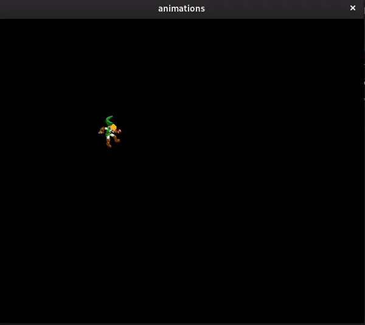
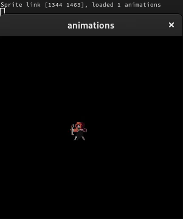
Now we should add a hook to close our program:
src/main.c
int ft_exit(t_sprite * s) {
if (!s)
exit(EXIT_FAILURE);
destroy_sprite(*s);
exit(EXIT_SUCCESS);
return 0;
}
main( ...
...
mlx_hook(tutorial.win_ptr, 17, 0, ft_exit, &s1);You can confirm that you are freeing all the memory if you run your program with valgrind, you should get an output like this:
you can try this to run valgrindvalgrind --leak-check=full --show-leak-kinds=all --track-origins=yes --verbose --log-file=valgrind-out.txt ./animations
Now that it's normal that there is still reachable because that's from the dynamic library allocating memory. It doesn't mean that there are leaks. Although always double check the sumary to see if there are no traces of your functions.
Anyways if there is any definitly lost, indirectly lost or possibly lost or suppresed, that means that you forgot to free something or something got lost in the middle.
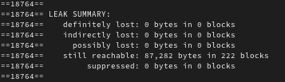
FPS - Frames Per Second
It's very simple to implement frames per second in your program, you will need a function that returns the current time so you can compare how much time passed since the last time you updated your program, and if the time is higher to your frames per second rule, you should update the program.
For now we can use some global variables to representate the created_at and updated_at fps, later, we will create an example with an actual program, without using this ugly global variables.
For now we can use some global variables to representate the created_at and updated_at fps, later, we will create an example with an actual program, without using this ugly global variables.
src/utils.c
# include <sys/time.h>
# include <stdint.h>
uint64_t created_at = 0;
static uint64_t gettimeofday_ms(void) {
static struct timeval tv;
gettimeofday(&tv, NULL);
return ((tv.tv_sec * (uint64_t)1000) + (tv.tv_usec / 1000));
}
uint64_t timestamp_in_ms(void) {
if (created_at == 0)
created_at = gettimeofday_ms();
return (gettimeofday_ms() - created_at);
}Now let's change the update function on the main to the following:
src/main
#include <stdint.h>
uint64_t timestamp_in_ms(void);
uint64_t updated_at = 0;
int fps = 64;
int update(t_list * list) {
if (timestamp_in_ms() - updated_at < (uint64_t)(1000 / fps))
return 0;
updated_at = timestamp_in_ms();
printf("timestamp: %ld\t update: %ld\n", timestamp_in_ms(), updated_at);
if (!list)
return 1;
ft_lstiter(list, update_animaiton);
return 0;
}Now you can control the fps whatever number you want, but I recommend you don't exceed 600 .
I told you it was simple ;)
Bellow you can see a comparison of the animation running at: 32fps, 64fps, 120fps, 300fps, 600fps & 800fps.
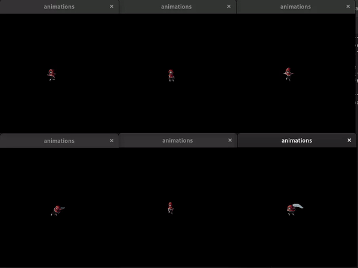
Game Tutorial w/ animations
Download the zip to access the game tutorial ;)
Now that we lernt how to create animations, we will create a game so you see how you can implement the animations anywhere you want.
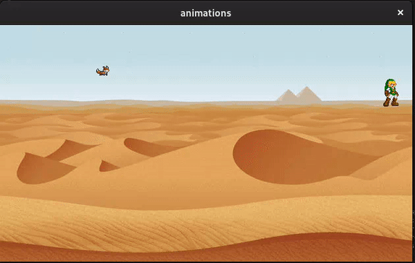
I hope you liked it! :D
Cheers and good luck!
Cheers and good luck!
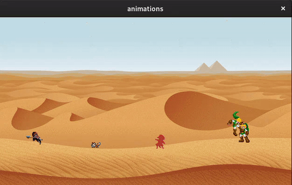